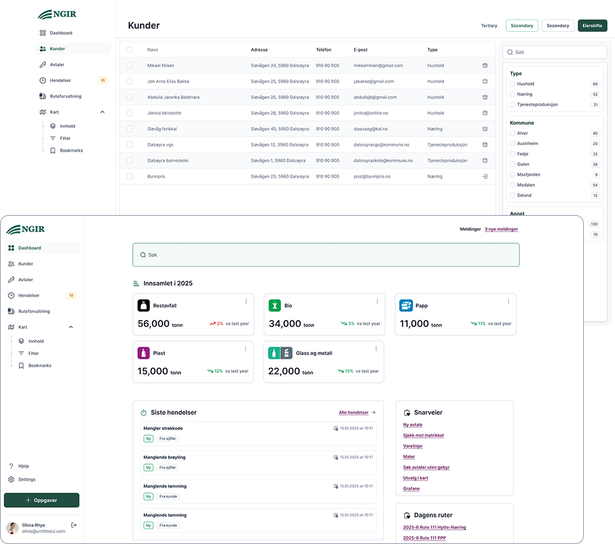

I dette prosjektet utforsket jeg en digital løsning for renovasjonssjåfører og administrasjon i et renovasjonsselskap. Målet var å gjøre arbeidshverdagen i felt enklere og gi bedre oversikt over ruter og avvik.
Sjåfører måtte bruke flere systemer for ruteinformasjon, rapportering og avviksregistrering. Dette gjorde det tidkrevende å registrere hendelser underveis og ga dårlig oversikt for administrasjonen.
Jeg jobbet utforskende gjennom:
En viktig innsikt var at arbeidet er geografisk og skjer i bevegelse, noe som gjorde kart til et naturlig hovedgrensesnitt.
Jeg utviklet et konsept for en mobil løsning der:
ADV-RTM er et webbasert analyse- og samhandlingsverktøy utviklet for by- og transportplanlegging. Verktøyet kombinerer data om arealbruk, transport, parkering og klima for å gi bedre beslutningsgrunnlag i planprosesser. Løsningen er utviklet i samarbeid med departementer, direktorater og kommuner.
I prosjektet jobbet jeg som tjeneste- og UX-designer, med mål om å gjøre et faglig komplekst analyseverktøy mer forståelig og anvendelig for brukerne.
Brukerne jobbet med avanserte analyser og store datamengder, men opplevde at det var krevende å få oversikt over resultater og sammenhenger. Ulike fagperspektiver – transport, areal og klima – gjorde det også vanskelig å skape en felles forståelse av hva analysene faktisk viste.
Arbeidet besto blant annet av:
Gjennom arbeidet ble det tydelig hvor viktig oversikt, transparens og tillit til data var for brukerne.
Jeg bidro til å utvikle konsepter for en mer oversiktlig struktur i verktøyet, med tydeligere navigasjon mellom analyser, scenarier og resultater. Visualiseringer og dashboards ble videreutviklet for å gjøre komplekse analyser lettere å tolke og bruke i planprosesser.
Asplan Viak bruker en digital styringsportal i Bikube (Microsoft) for prosjektgjennomføring. Den eksisterende løsningen ble imidlertid opplevd som lite intuitiv og tidkrevende i bruk, særlig i mindre oppdrag der behovet for rask oversikt og enkle avklaringer er stort.
Prosjektet handlet om å utvikle et nytt grensesnitt oppå Bikube – en forenklet styringsportal med tydeligere struktur, færre steg og bedre navigasjon. Jeg hadde ansvar for store deler av designarbeidet i prosjektet.
Prosjektledere og ansatte opplevde at styringsportalen inneholdt mye funksjonalitet, men at det var vanskelig å finne frem til det man faktisk trengte i arbeidshverdagen. Resultatet var unødvendig tidsbruk og friksjon i prosjektarbeidet.
For å forstå hvordan verktøyet ble brukt i praksis jobbet jeg blant annet med:
Testene ga innsikt i hvilke deler av portalen som skapte mest forvirring, og hvor forenkling ville ha størst effekt.
Jeg utviklet et nytt grensesnitt med tydeligere struktur og mer oppgaveorientert navigasjon. Målet var å gjøre det enklere å få oversikt over prosjektstatus, oppgaver og dokumentasjon uten unødvendige steg.
Resultatet ble en styringsportal som oppleves mer intuitiv og bedre tilpasset faktiske arbeidsprosesser.
Fra april 2020 til mars 2021 hadde jeg en stilling som Head of Design i ISFiT, en av verdens største studentdrevne festivaler, i Trondheim. I rollen ledet jeg et designteam med grafiske designere, UX-designere og én utvikler som hadde ansvar for å utvikle festivalens visuelle identitet og sikre et helhetlig uttrykk på tvers av alle flater.
Vi utarbeidet en ny grafisk profil, og produserte variert innhold som plakater, magasiner, profilklær og en egen mobilapplikasjon. Arbeidet krevde både kreativ retning, prosjektledelse og tett samarbeid med andre faggrupper i festivalen, for å skape en tydelig og gjenkjennelig merkevareeopplevelse for deltakere og frivillige.
I én uke i februar 2021 fikk jeg muligheten til å dekorere Karl Johans gate i samarbeid med Studentenes Fredspris.
[Skriv en kort introduksjon om deg selv her. Hva jobber du med, hva brenner du for, og hva er bakgrunnen din?]
[Et avsnitt til — gjerne noe om pågående prosjekter eller hva du ser etter.]
[English version of your bio for international employers or collaborators.]